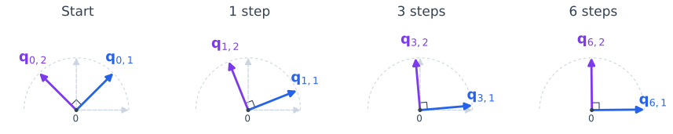
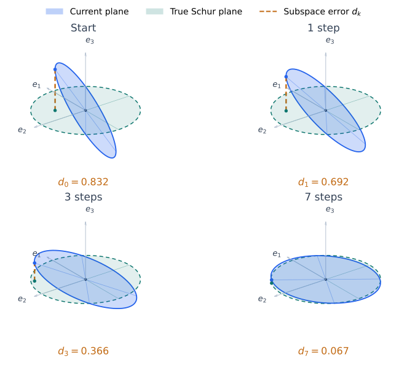

The Orthogonal Iteration Algorithm#
Deflation finds a new Schur direction by projecting out the directions already known. Its explanation assumed those directions were exact. In computation, we would have to wait for each power iteration to converge before starting the next one.
Orthogonal iteration updates all the directions together. At each step, it multiplies the current basis vectors by \(A\), then uses QR to project out earlier directions and normalize. The projections use the current approximations rather than exact Schur vectors.
The Exact Target and the Current Basis#
For \(A\in\mathbb C^{n\times n}\), write an ordered Schur decomposition as \(A=Q_\star TQ_\star^H\), with \(|\lambda_1|\ge\cdots\ge|\lambda_n|\), as in deflation. Choose how many directions to follow: \(1\le p\le n\).
Notation |
Meaning |
|---|---|
\(Q_\star\) |
The fixed, exact \(n\times n\) Schur basis. |
\(Q_k\) |
The \(n\times p\) orthonormal basis at iteration \(k\). |
\(\boldsymbol q_{\star,j}\), \(\boldsymbol q_{k,j}\) |
Column \(j\) of the exact and current bases. |
\(Q_{\star,i}\), \(Q_{k,i}\) |
The first \(i\) columns of those bases. |
Thus \(k\) counts iterations and \(i\) or \(j\) counts columns. The target \(p\)-dimensional invariant subspace is
The exact basis describes what we want to find.
Multiply, Then Orthonormalize#
Start with \(Q_0\in\mathbb C^{n\times p}\) whose columns are orthonormal. For \(k=0,1,\ldots\), compute
The second step is an unpivoted thin QR factorization. The columns of \(Q_{k+1}\) are orthonormal, and \(R_{k+1}\) is \(p\times p\) upper triangular. Column order matters: each new direction is made perpendicular to the directions before it. Normalizing the columns separately would allow all of them to approach the same dominant direction.
For the analysis, assume that \(AQ_k\) has rank \(p\) at every step, so each \(R_{k+1}\) is invertible. The convergence theorem below gives conditions that guarantee this.
How QR Performs Approximate Deflation#
Write the QR step as Gram–Schmidt in exact arithmetic, choosing positive diagonal entries in \(R_{k+1}\). Other sign or phase choices give the same subspaces.
The first column is simply power iteration:
For the second column, multiply \(\boldsymbol q_{k,2}\) by \(A\), subtract its component along the new first column \(\boldsymbol q_{k+1,1}\), and normalize. Continue in the same way. For column \(i+1\), the update is
The projector uses the newly computed first \(i\) columns because QR processes the columns of \(AQ_k\) in order. If they spanned the exact leading Schur subspace, then
The update would then be the projected power step from deflation. Its target satisfies
In the actual iteration, the first \(i\) directions are still improving while we update direction \(i+1\). This explains the mechanism, but it is not yet a convergence proof: the projector changes at every step. We will account for those changes by following the column spaces.
The Same Two-Dimensional Example#
Return to the matrix from deflation and start with a rotated orthonormal basis:
One multiplication and QR step give
The first column moves closer to the horizontal dominant direction. The second stays perpendicular to the new first column, so it moves closer to the vertical second Schur direction. Neither direction has to converge before the other is updated.


Fig. 16 Both directions evolve together. The blue column follows power iteration; QR keeps the purple column perpendicular to it. The two columns span the whole plane from the start. What improves is the first column’s line and, consequently, the perpendicular second direction.#
The Connection to Powers of \(A\)#
The changing projections make a column-by-column convergence proof awkward. A simpler observation removes them from the analysis: QR changes the basis, but preserves the column space.
Define the accumulated triangular factor
Theorem 25 (QR of \(A^kQ_0\))
For every \(k\ge0\), orthogonal iteration satisfies
Proof. For \(k=0\), the identity is \(Q_0=Q_0I_p\). If it holds at step \(k\), then
This proves the identity by induction.
Because \(\widehat R_k\) is upper triangular and invertible, this is a thin QR factorization of \(A^kQ_0\). With positive diagonal entries in each \(R_j\), it is the unique thin QR factorization with positive diagonal.
For \(p=1\), \(\widehat R_k\) is the product of the normalization factors in the power method. For full iteration with \(Q_0=I_n\), the identity becomes
The algorithm obtains these factors without forming \(A^k\).
More importantly, invertibility gives
Upper triangularity gives the same result for every leading set of columns. Let \(\widehat R_{k,i}\) be the leading \(i\times i\) block of \(\widehat R_k\). The first \(i\) columns of the factorization satisfy
Thus each leading column space undergoes a power iteration of its own. QR keeps its basis orthonormal without changing that space.
Convergence of a Leading Subspace#
Orthogonal iteration aims to approximate the leading \(p\)-dimensional Schur subspace. The theorem below shows how quickly that approximation improves. This is the main convergence result for the method: it extends the power method’s convergence theory from one direction to a space of \(p\) directions.
Key result: convergence of orthogonal iteration
Under the assumptions below, the space spanned by the columns of \(Q_k\) approaches the space spanned by the first \(p\) exact Schur vectors. Its error is bounded by a constant times \(\rho_p^k\), where
For \(p=1\), the target is the dominant eigenvector’s line and \(\rho_1=|\lambda_2/\lambda_1|\): the familiar power-method convergence factor. For \(p>1\), the result controls the accuracy of an entire approximate Schur subspace.
To understand the ratio, recall that \(\operatorname{range}(Q_k)=\operatorname{range}(A^kQ_0)\). Assuming \(A\) is diagonalizable, multiplication by \(A^k\) scales eigenvector component \(i\) by \(\lambda_i^k\). We want to retain the first \(p\) eigenvector directions and suppress the rest. Their span is the same as that of the first \(p\) Schur vectors.
Among the wanted components, \(|\lambda_p|^k\) is the smallest scaling factor. Among the unwanted components, \(|\lambda_{p+1}|^k\) is the largest. Comparing the largest unwanted scaling with the smallest wanted scaling gives
This is a relative comparison, so it applies whether the components grow or decay. A smaller \(\rho_p\) gives faster separation of the wanted space from the unwanted directions. Only the gap between these two groups must be strict; eigenvalue magnitudes within either group may be equal. The subspace can therefore converge even while its individual basis vectors continue to change within it.
For example, suppose the three largest eigenvalue magnitudes are \(10\), \(9.9\), and \(1\), and the starting-space conditions hold. For the first direction, the error bound decays like \(0.99^k\). For the first two columns together, it decays like \((1/9.9)^k\), with a convergence factor of about \(0.10\). Thus a two-dimensional Schur subspace can become accurate much sooner than its individual Schur directions are resolved.
There is also a starting-space requirement. The power method needs a nonzero coefficient in the wanted eigenvector direction. For \(p\) directions, the starting vectors must contain \(p\) independent combinations of the wanted eigenvector components. Otherwise, repeated multiplication cannot recover all of them. The theorem makes this requirement precise.
Measuring the Subspace Error#
To measure the accuracy of the whole subspace, look at how far its unit vectors extend outside the target space. Changes of basis within the target should not count as error. Let \(\Pi_\star=Q_{\star,p}Q_{\star,p}^H\) project onto that target. Define
The second expression follows because the columns of \(Q_k\) are orthonormal. It measures the largest component outside the target among unit vectors in the current subspace. It is zero exactly when the two subspaces coincide and does not depend on which orthonormal bases represent them. For \(p=1\), it measures the misalignment of the iterate with the dominant eigenvector’s line.
For \(n=3\) and \(p=2\), the subspaces are planes through the origin. The figure shows the approximate plane approaching the true Schur plane. The orange segment realizes the maximum in the definition of \(d_k\): it joins a unit vector in the current plane to its orthogonal projection onto the target plane.


Fig. 17 Plane convergence for \(A=\operatorname{diag}(1.05,1,0.65)\), with \(n=3\) and \(p=2\). The true Schur subspace is the horizontal plane \(\mathcal S_\star=\operatorname{span}\{e_1,e_2\}\); the starting plane is \(z=0.9x+1.2y\). Each disk is a unit-radius patch of its subspace, and all views use the same camera and scale. The shrinking orange segment measures \(d_k\). The convergence bound uses \(\rho_2=|\lambda_3/\lambda_2|=0.65\).#
The Convergence Theorem#
Theorem 26 (Convergence of Orthogonal Iteration)
Suppose \(A=X\Lambda X^{-1}\), and for some \(1\le p<n\),
Partition the eigenvector basis and the starting coordinates as
where \(X_1\) has \(p\) columns and \(C_1\) is \(p\times p\). If \(C_1\) is invertible, orthogonal iteration is well-defined in exact arithmetic and its column space converges to
For \(k\ge1\),
Invertibility of \(C_1\) means that the starting vectors contain enough independent components to recover all \(p\) wanted directions. For \(p=1\), it reduces to \(c_1\ne0\) in the power method. A random orthonormal start satisfies it with probability one in exact arithmetic.
These are coordinates in the eigenvector basis. For a normal matrix, we can take \(X=Q_\star\), so \(C_1=Q_{\star,p}^HQ_0\). For a nonnormal matrix, ordinary orthogonal overlap with the target does not replace the condition on \(X^{-1}Q_0\).
Proof. The Eigenvalue-Ratio Bound. Partition \(\Lambda=\operatorname{diag}(\Lambda_1,\Lambda_2)\) consistently with \(X\). Repeated multiplication gives
The gap implies that \(\Lambda_1\) is invertible. The first \(p\) rows of \(X^{-1}A^kQ_0\) form the invertible matrix \(\Lambda_1^kC_1\). Hence \(A^kQ_0\) has rank \(p\) at every step. Inductively, \(AQ_k\) has the same rank as \(A^{k+1}Q_0\), so every QR factor \(R_k\) is invertible.
Separate the wanted coordinates from the unwanted ones. Right multiplication by \(C_1^{-1}\Lambda_1^{-k}\) changes the basis but not the column space:
Thus \(\operatorname{range}(Q_k)=\operatorname{range}(X_1+X_2F_k)\). The matrix \(F_k\) contains the unwanted coordinates after the wanted coordinates have been set to the identity. Since both eigenvalue blocks are diagonal,
Translate this into geometric error. Any unit vector in the current subspace has the form
Therefore,
Projection removes the wanted part because \((I-\Pi_\star)X_1=0\). It follows that
Maximizing over unit vectors \(\boldsymbol z\) and substituting the bound on \(F_k\) gives \(d_k\le K\rho_p^k\).
A ratio near one gives slow separation; a smaller ratio gives faster separation. The constant \(K\) depends on the initial space and the eigenvector basis and can be large for nonnormal matrices. The theorem gives an upper bound; particular starting spaces can converge faster.
This proof assumes diagonalizability. Orthogonal iteration can also be applied to matrices that are not diagonalizable, but their convergence bounds may include polynomial factors in \(k\). Arbenz’s notes on subspace iteration give further analysis.
From Nested Subspaces to Schur Directions#
For full iteration, \(p=n\), the columns of \(Q_k\) always span \(\mathbb C^n\). Convergence of that full space says nothing about the individual directions. The two-dimensional example illustrates what matters: the leading column spaces converge.
Assume now that
and that the starting-space condition holds for each leading set of columns: the first \(i\) rows of \(X^{-1}Q_{0,i}\) form an invertible \(i\times i\) matrix. The nonzero eigenvalues ensure that full iteration has invertible QR factors. Applying the theorem separately for each \(i<n\) gives
with error bounded by a constant times \(|\lambda_{i+1}/\lambda_i|^k\).
Column \(i\) is the unit direction in the first \(i\) columns that is perpendicular to the first \(i-1\). To express this precisely, let
For equal-dimensional subspaces, their orthogonal projectors satisfy
Thus their projectors converge too. Subtracting two consecutive projectors isolates column \(i\):
Here \(\Pi_{k,0}=\Pi_{\star,0}=0\), and \(\Pi_{k,n}=\Pi_{\star,n}=I\). This proves convergence of every Schur direction, including the last one.
As in the power method, signs or complex phases can keep changing. Nevertheless, the diagonal entries of
approach the ordered eigenvalues, and the entries below the diagonal approach zero. Entries above the diagonal can continue to change with those phases.
For partial iteration, a boundary gap \(|\lambda_p|>|\lambda_{p+1}|\) alone guarantees convergence of the \(p\)-dimensional space, not its individual basis directions. Additional internal gaps and starting-space conditions give convergence of the corresponding leading spaces. A nonreal conjugate pair must be treated together in real arithmetic because its two eigenvalues have equal magnitude.
A Basic Implementation#
The following code performs a fixed number of steps under the full-column-rank assumption above. NumPy may choose different QR signs or phases; these do not affect the computed subspaces.
import numpy as np
def orthogonal_iteration(A, p, num_iterations):
n = A.shape[0]
rng = np.random.default_rng()
G = rng.standard_normal((n, p))
if np.iscomplexobj(A):
G = G + 1j * rng.standard_normal((n, p))
Q, _ = np.linalg.qr(G, mode="reduced")
for _ in range(num_iterations):
Z = A @ Q
Q, R = np.linalg.qr(Z, mode="reduced")
return Q
For dense \(A\), each step costs \(O(n^2p)\) for multiplication and \(O(np^2)\) for QR. Using fewer columns is useful when only a few eigenvalues are wanted; sparse matrix products can also reduce the multiplication cost.
For \(p<n\), form
A small \(\|E_k\|_2\) means that applying \(A\) nearly keeps vectors within the current subspace. It can be used as a stopping criterion relative to the scale of \(A\). As the subspace converges, the eigenvalues of \(T_k\), called Ritz values, approach the wanted eigenvalues. A small residual alone does not identify which invariant subspace has been found.
For full iteration, \(E_k=0\) at every step because \(Q_k\) is square and unitary. Under the strict-gap assumptions, the entries below the diagonal of \(T_k\) measure progress toward Schur form. The next section develops the eigenvalue interpretation and the role of shifts.